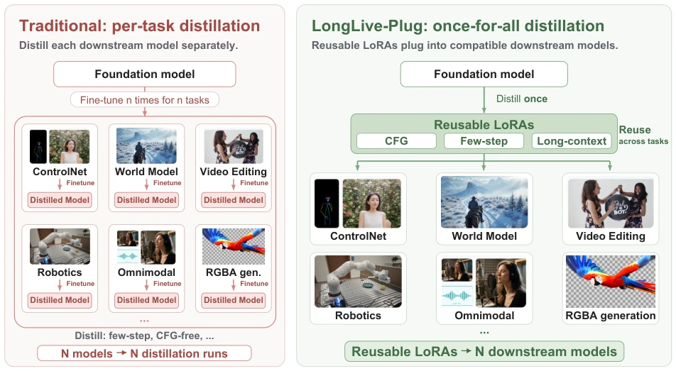
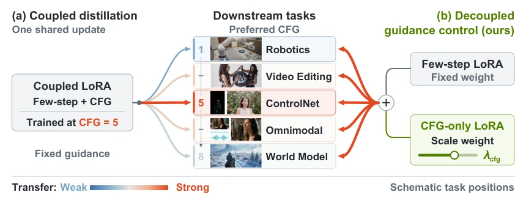
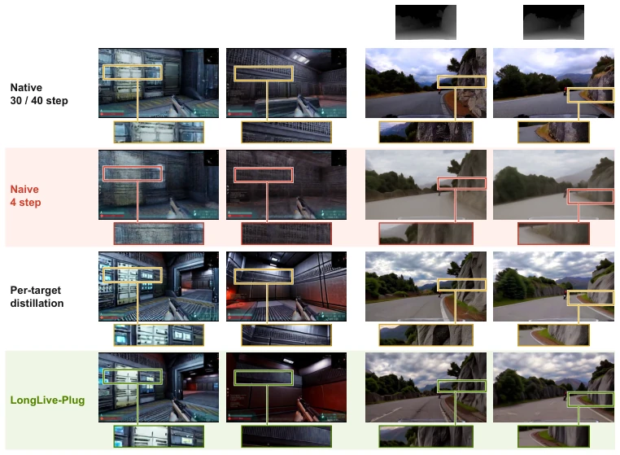
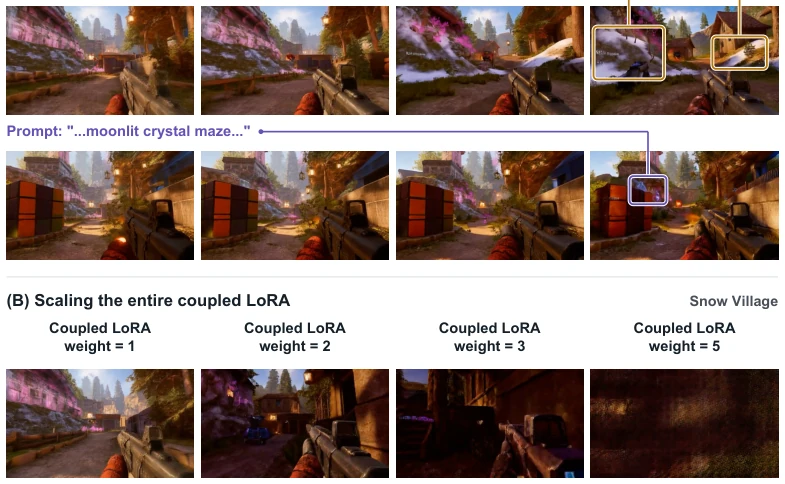
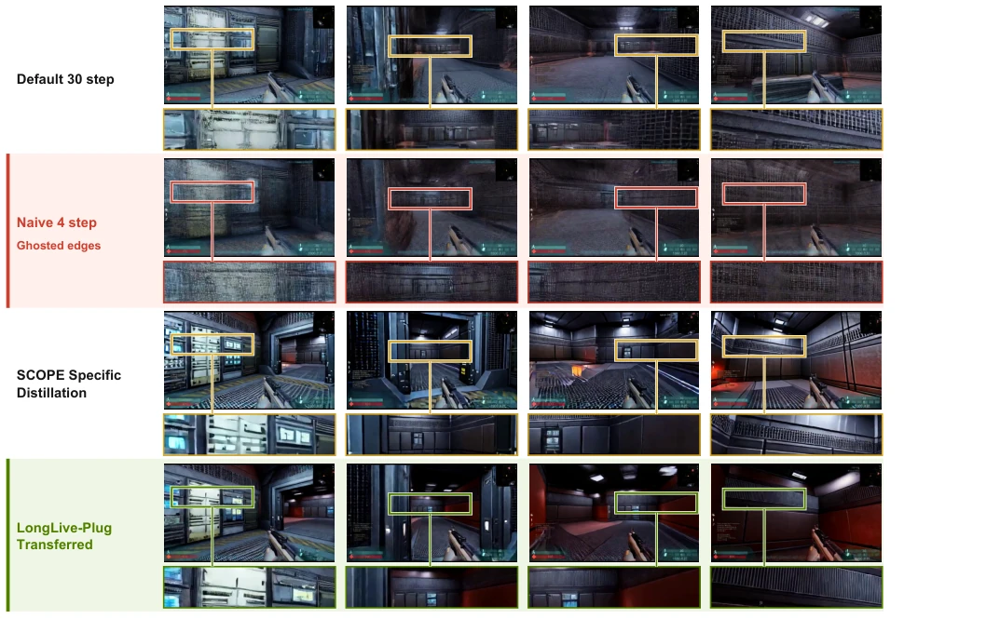
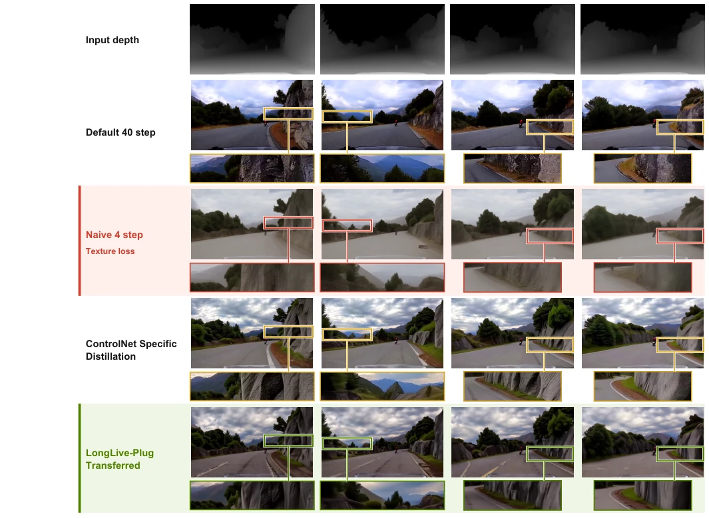
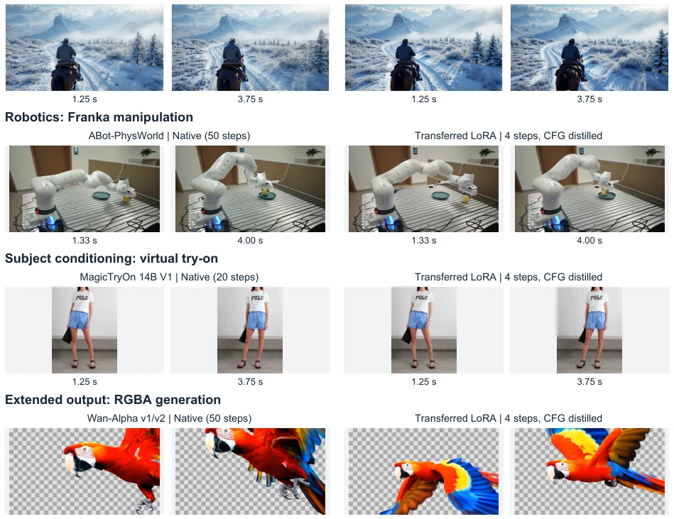
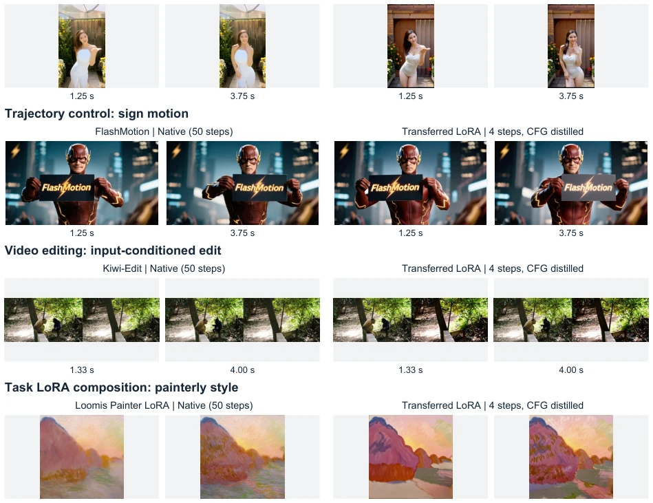
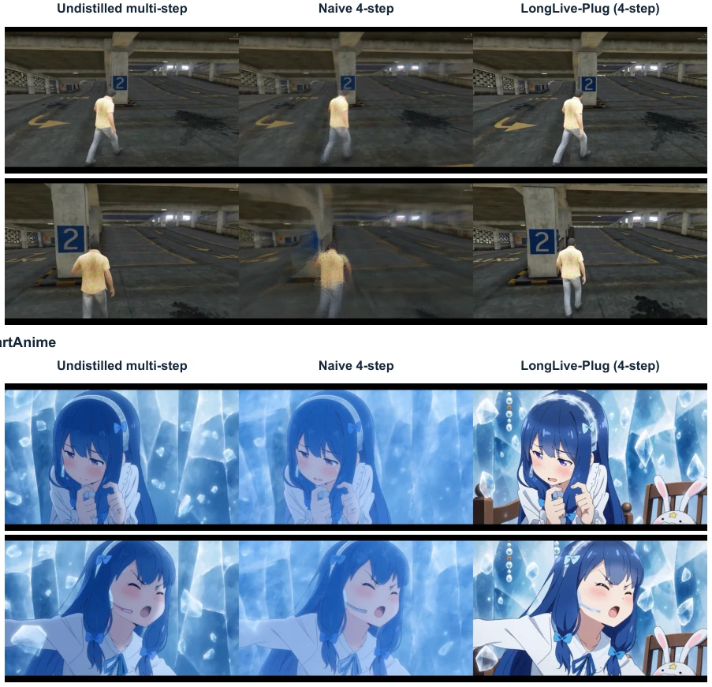
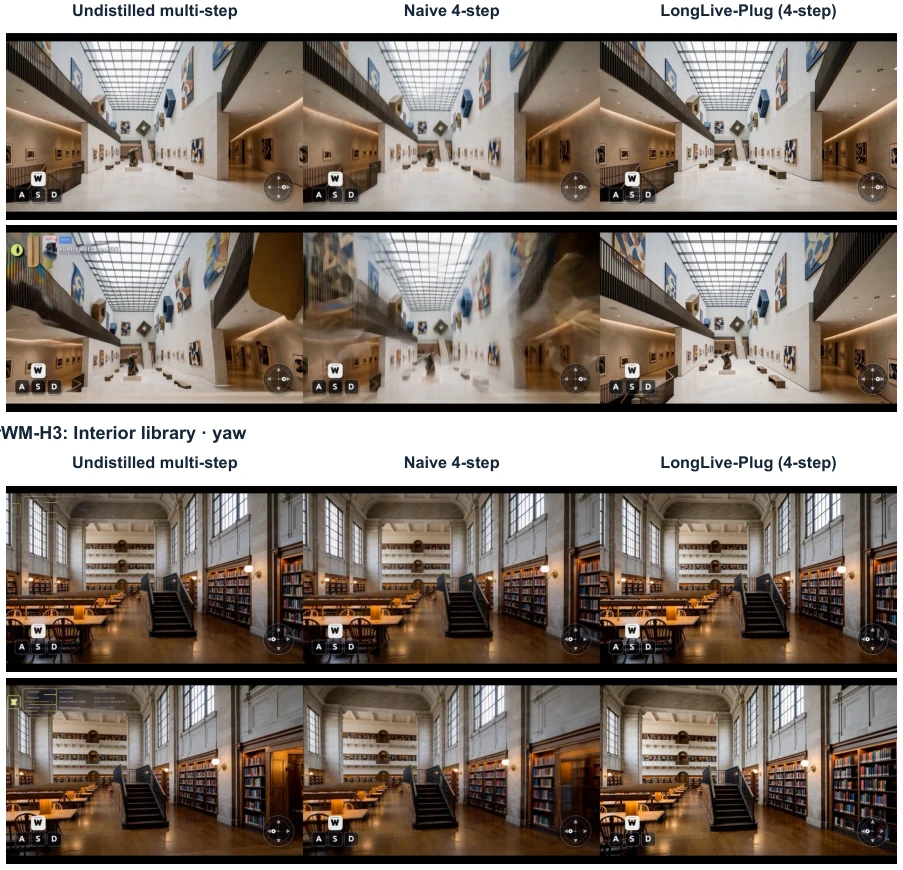

LongLive-Plug 这招“一次蒸馏，终身受用”确实有点东西，把视频生成模型从“单兵作战”拉到了“模块化组装”的层面。它把加速、CFG 控制和长视频纠错打包成 LoRA，像插 U 盘一样即插即用，省去了给每个下游任务重新炼丹的麻烦，简直是科研界的“降本增效”典范。不过，这“万能钥匙”也不是真的万能，它挑模型挑得厉害，必须基于同一家族底座，且长上下文能力还得依赖模型自带因果 AR 架构，不能硬套。另外，虽然号称“训练自由”，但那个 CFG 权重调整其实只是近似线性，到了极端情况可能还是得手动调参，所谓的“即插即用”在工程落地时可能还得加个“调试插件”。总的来说，是个很实用的工程优化思路，但别指望它能解决所有模型泛化性的玄学问题。
LongLive-Plug's strategy of "distill once, use forever" is indeed quite impressive, elevating video generation models from "standalone operation" to the level of "modular assembly". It packages acceleration, CFG control, and long video error correction into LoRA, plug-and-play like inserting a USB drive, saving the trouble of re-distilling for each downstream task, truly a model of "cost reduction and efficiency increase" in the scientific research community. However, this "universal key" is not truly universal; it is quite picky about models, requiring the same family backbone, and long context capability must rely on the model's built-in causal AR architecture, cannot be force-fitted. Additionally, although claimed "training-free", the CFG weight adjustment is actually only approximately linear, and in extreme cases manual parameter tuning might still be needed, so the so-called "plug-and-play" might require an added "debugging plugin" during engineering implementation. Overall, it is a very practical engineering optimization idea, but do not expect it to solve all the metaphysical problems of model generalization.
Current video diffusion models are evolving crazily towards specialization, whether world models, robot simulation, or video editing; each new task often requires re-distillation to accelerate sampling or improve long video quality. This "one distillation per task" mode leads to huge repetition costs: each time requires preparing data, finding teacher models, and performing optimization [46, 75]. For example, for task-specific acceleration or long video generation, existing methods like CausVid and Self Forcing often couple CFG and few-step sampling together, leading to the guidance scale being fixed once training is completed, unable to flexibly adapt to different downstream tasks' different preferences for CFG intensity [33, 93]. Additionally, the cumulative error problem in long video generation also lacks a universal, reusable error correction mechanism. LongLive-Plug aims to break this "reinventing the wheel" dilemma, proposing a "distill once, use forever" framework, decoupling and encapsulating core capabilities into reusable LoRA, thereby avoiding repeated training for each new model.

Figure 1 | Once-for-all distillation with plug-and-play deployment. Conventional pipelines separately distill every downstream model (left). LongLive-Plug distills CFG, few-step, and long-context capabilities into reusable LoRAs on each base model, then transfers them to compatible downstream models without target-specific training (right).
LongLive-Plug's core idea is to distill three key capabilities (CFG distillation, few-step sampling, long context error correction) separately into independent LoRA adapters, train once on the Base Model, then losslessly transfer to compatible downstream models. The overall process is divided into three steps: first, freeze parameters on the base model, train three functional LoRAs separately; second, through decoupled design, separate CFG control and few-step sampling, avoiding loss of flexibility caused by coupling; finally, during inference, add downstream task-specific weights with these pre-trained LoRAs (Additive), without any downstream fine-tuning. Specific innovations include: 1. Decoupled CFG control: Traditional methods couple CFG with few-step sampling, leading to inability to adjust guidance scale. LongLive-Plug trains a CFG-only LoRA separately, its inference weight (λ_cfg) acts as a "control knob", can linearly adjust guidance scale, while few-step LoRA weights remain fixed, thereby retaining flexible text control power while accelerating. 2. Transfer-oriented design: Research finds LoRA's Rank and distillation data diversity directly affect transfer performance. Therefore, the method emphasizes using high-rank LoRA and T2V prompts covering wide topics and scenes for distillation, to enhance the adapter's generalization ability. 3. Long context error correction: For causal autoregressive (AR) models, utilize Streaming Long Tuning and Distribution Matching Distillation (DMD), train a LoRA specifically correcting long sequence cumulative error, making it able to transfer to downstream models supporting AR.

Figure 2 | Decoupled guidance control through an additional CFG-only LoRA. (a) Scaling a single distilled LoRA changes the entire update, including its learned guidance and few-step behavior. (b) Adding a separately weighted CFG-only LoRA lets us adjust guidance for each target while keeping the few-step adapter weight fixed. Arrow colors and widths schematically illustrate guidance compatibility, with the warmest coupled-transfer arrow at CFG 5. CFG-only LoRA scaling provides an adjustable guidance control.
The authors validated this method on 54 downstream models across three backbone families (Wan2.1-14B, Wan2.2-TI2V-5B, MiniMax-H3), covering eight major tasks including world models, robotics, editing, etc. In the SCOPE world model task, LongLive-Plug reduced FVD from 805.5 to 478.7, performance close to or even better than models specifically distilled for SCOPE (502.1), and without extra training. In the ControlNet task, this method outperforms naive four-step sampling on depth estimation (si-RMSE) and DOVER metrics, and shows competitiveness comparable to task-specific distillation. Ablation studies show that increasing LoRA rank (from 16 to 128) and distillation data diversity (reducing prompt concentration) can significantly improve transfer quality. Additionally, the transfer of long context LoRA on ReWorld and Matrix-Game 3.0 also effectively improved visual quality and temporal consistency of long video generation.

Figure 4 | Matched transfer comparisons on SCOPE and Wan2.2-Fun-5B-Control (Depth). Two matched frames per task compare native (30/40 steps), naive four-step, per-target distilled, and LongLive-Plug outputs. Naive four-step sampling produces blurry, low-quality videos, whereas LongLive-Plug maintains high visual quality at four steps. Depth thumbnails condition Con- trolNet; boxes and strips show matched regions across methods. LongLive-Plug uses an additional base-distilled adapter variant. Appendix B gives full four-frame comparisons and alignment details.

Figure 6 | Independent CFG control on SCOPE. (A) The coupled LoRA alone at weight 1 shows little response to the prompts. Adding a separately weighted CFG LoRA strengthens the boxed prompt attributes while the coupled LoRA weight remains at 1. Colored lines link each box to its corresponding prompt text. (B) Scaling the entire coupled LoRA instead degrades generation. Frames are matched across weights within each row. All runs use four-step sampling with distilled CFG; (A) and (B) use different coupled checkpoints.

Figure 8 | Keyframe comparison on SCOPE. Four matched keyframes from an 81-frame sequence at 20 fps. Rows compare default 30-step inference, naive four-step sampling, SCOPE-specific distillation, and transferred LoRAs, using the same case and seed. Boxes mark identical image coordinates across methods; the strips below each frame magnify these regions. Red highlights the naive four-step row’s ghosted wall and door edges, while the distilled variants retain clearer boundaries and surface detail.

Figure 9 | Keyframe comparison on Wan2.2-Fun-5B-Control. Four matched keyframes compare input depth and four generation methods. Boxes mark identical image coordinates across methods, magnified in the strips below each output. Red highlights the naive four-step row’s smeared rock, foliage, and road details and low contrast. Columns match conditioning frame indices (depth at 30 fps, outputs at 24 fps). The transferred output uses an additional base-distilled adapter variant.

Figure 10 | Additional Wan2.1-14B transfer cases. LongVie 2, ABot-PhysWorld, MagicTryOn, and Wan-Alpha illustrate world modeling, robotics, subject conditioning, and RGBA output. Each row compares two native frames (left) with the same two times- tamps after four-step transfer (right). Inputs and task conditions are paired in the source report. The checkerboard is part of the Wan-Alpha preview, not a measurement of alpha-channel accuracy. Changes in appearance and motion remain visible after transfer.

Figure 11 | Additional Wan2.2-TI2V-5B transfer cases. Depth-conditioned Fun Control, FlashMotion, Kiwi-Edit, and Loomis Painter cover structure, trajectory, editing, and style adaptation. The native and transferred columns show identical frame indices for each paired task input. Native inference uses 50 steps for Kiwi-Edit and Loomis Painter. All transferred outputs use four steps with CFG distilled into the adapter; downstream conditioning and task adapters are retained.

Figure 12 | H3 task transfer: action control and line-art coloring. Left: undistilled multi-step inference. Middle: naive four-step sampling. Right: four-step inference with LongLive-Plug. H3-World shows matched frames at 1 and 4 s under a forward-action condition. LineartAnime shows frames at 1 s and the final available frame (3.71 s). S4 preserves a clearer character outline than E4 in these examples, while appearance can differ from D. These static frames do not evaluate audio quality or synchronization.

Figure 13 | H3 camera transfer includes a quality–control trade-off. Left: undistilled multi-step inference. Middle: naive four- step sampling. Right: four-step inference with LongLive-Plug. In the museum-crane example, S4 retains clearer architectural detail and a visible upward-camera response. In the library-yaw example, S4 remains sharp but its change in framing is attenuated relative to D/E4. HUD elements are inherited from the supplied anchor images. These cases have no generated-video pose regression metric and do not establish precise trajectory adherence.